4.资源文件窗口
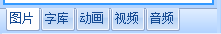
资源文件窗口存放工程所调用到资源。其中动画，音频仅x系列支持，视频仅x5系列支持。
图片资源
图片资源：t0 t1系列支持jpg bmp； k0系列支持jpg bmp；x系列支持jpg png bmp；
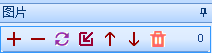
如图所示,可以使用相关按钮进行图片添加，删除，替换，插入，上移，下移，全删。
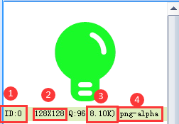
- 1.图片id
控件背景调用图片使用到的id。
2.图片分辨率
最小图片分辨率为： 2 * 2像素
最大图片分辨率为当前屏幕的分辨率，例如TJC8048X550_011C，分辨率为 800 * 480，则最大的图片分辨率也是 800 * 480，也就是全屏图片
- 3.图片压缩质量
压缩质量越大，图片显示效果越好，但是占用的空间会更大，x5,x3,t1系列支持图片压缩储存，k0,t0系列不支持图片压缩储存
- 4.图片大小
导入后的图片占用的空间可能变大也有可能变小
- 5.图片格式
导入图片的图片格式。
图片资源右键菜单
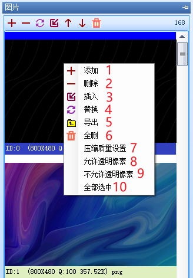
1~6为添加，删除，插入，替换，导出，全删
- 7.压缩质量设置
仅x3、x5系列支持，当导入图片后该图片占用的存储空间大于400KB时，请调低压缩质量，否则可能导致图片无法显示。
- 8.允许透明像素
仅x系列支持。
- 9.不允许透明像素
仅x系列支持。
- 10.全部选中
选择所有图片。
字库资源
小技巧
字库：可以通过工具菜单中的《字库制作》工具制作
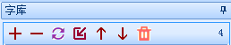
如图所示,可以使用相关按钮进行字库添加，删除，替换，插入，上移，下移，全删。
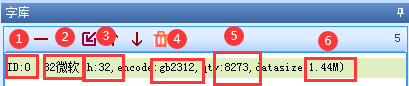
- 1.字库id
控件字库调用字库使用到的id。
- 2.字库名称
生成字库的时候进行命名。
- 3.字体大小
该字库的字体大小。
- 4.字体字符编码
该字库使用的字符编码。
- 5.字符数量
字库所包含的字符数量。
- 6.flash空间
字库所占flash空间大小。
字库资源右键菜单
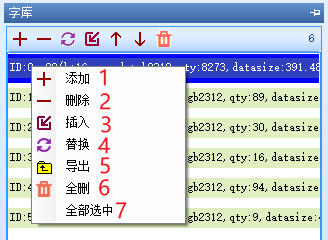
1~6为添加，删除，插入，替换，导出，全删
动画资源
动画：可以通过工具菜单中的动画制作，仅x3和x5系列支持
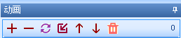
如图所示,可以使用相关按钮进行动画添加，删除，替换，插入，上移，下移，全删。
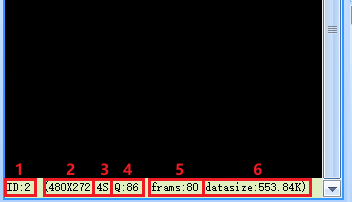
1.动画id，动画控件调用动画使用到的id。
2.动画分辨率，导入动画分辨率超出屏幕显示支持最大分辨率将会报错。
3.动画时长。
4.动画压缩质量。
5.动画帧数。
6.动画所占flash空间大小，转换后的动画占用的空间可能变大也有可能变小。
动画资源右键菜单
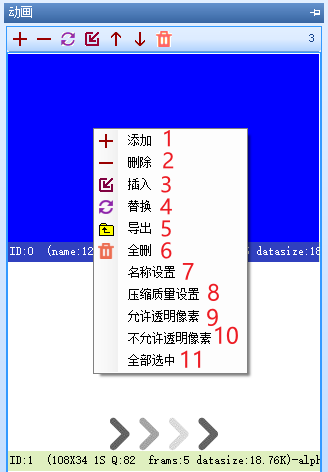
1~6为添加，删除，插入，替换，导出，全删
- 7.名称设置
相当于设置备注。
- 8.压缩质量设置
设置压缩质量，当文件过大时，降低压缩质量可以有效降低文件体积，但是会降低动画的显示效果。
- 9.允许透明像素
仅x系列支持。
- 10.不允许透明像素
仅x系列支持。
- 11.全部选中
选择所有动画。
视频资源
小技巧
视频：可以通过工具菜单中的视频/音频转换
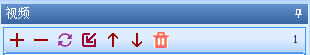
如图所示,可以使用相关按钮进行视频添加，删除，替换，插入，上移，下移，全删。
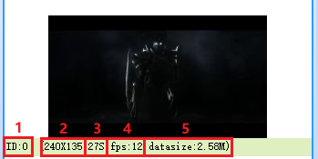
1.视频id，视频控件调用视频使用到的id。
2.视频分辨率，导入动画分辨率超出屏幕显示支持最大分辨率将会报错。
3.视频时长。
4.视频fps。
5.视频所占flash空间大小，转换后的视频占用的空间可能变大也有可能变小。
视频资源右键菜单
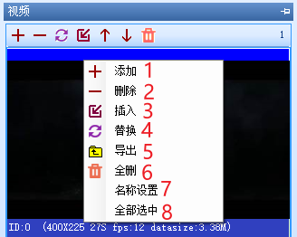
1~6为添加，删除，插入，替换，导出，全删
- 7.名称设置
相当于设置备注。
- 8.全部选中
选择所有视频。
音频资源
小技巧
音频：可以通过工具菜单中的《视频/音频》转换
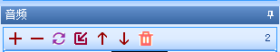
如图所示,可以使用相关按钮进行音频添加，删除，替换，插入，上移，下移，全删。
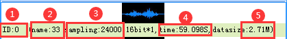
1.音频id，音频控件调用音频使用到的id。
2.音频名称，生成音频的时候进行命名。
3.音频采样率
4.音频时长。
5.音频所占flash空间大小，转换入后的音频占用的空间可能变大也有可能变小。
注意
音频格式必须用上位机自带的《视频/音频转换》转换为wav格式。
音频资源右键菜单
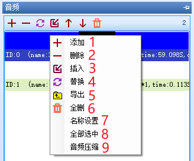
1~6为添加，删除，插入，替换，导出，全删
- 7.名称设置
相当于设置备注。
- 8.全部选中
选择所有音频。
- 9.音频压缩
修改音频的采样率。